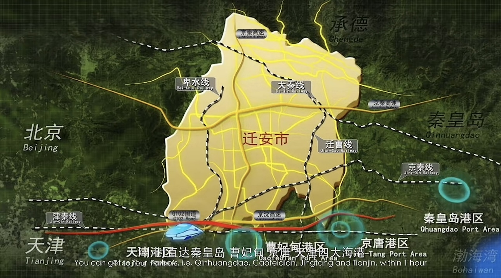

迁安高铁站坐落城区，区位优越，是京津冀东部重要交通站点。高铁线路通达北京、天津、唐山、秦皇岛等城市，实现短途快速通勤，极大便利了游客出行与城市经济交流。
迁安境内拥有长深高速、京秦高速、迁曹高速等多条主干高速，高速路网四通八达，贯穿全境。无论是自驾出游还是货物运输，都具备极佳的交通优势，是华北通往东北的咽喉要道。
迁安城区道路规划整齐、宽阔通畅，市内公交线路覆盖全城、景区及周边乡镇。公共交通完善、出行便捷，极大提升了市民生活便利度与游客游玩体验。
